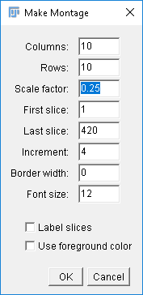

This page will help you use Fiji to convert TIF stacks to PNG atlases, which can then be loaded and viewed in the Zebrafish Brain Browser (zbbrowser.com).
Fiji Setup
You can get Fiji here: https://imagej.net/Fiji. Follow the instructions on the Downloads page to download and install it.
Converting TIF Stacks to PNG Atlases
- Open Fiji
- Select File->Open... and select your TIF file
- After the TIF has loaded, select Image->Stacks->Make Montage...
- Enter the options values seen in the image below

- The higher you set the "Scale factor" value, the higher the image quality will be in the brain browser. We recommend you set this value to 0.25 for a low-resolution image, 0.5 for a medium-resolution image, 0.75 for a high-resolution image, or 1.0 for a very-high-resolution image. Note that higher-resolution images will require more high-end computer hardware to run in the brain browser.
- Select "OK"
- After the montage image appears, select File->Save As->PNG... and save the image with any name you'd like
- Open the image in the brain browser to view the line. You're done!